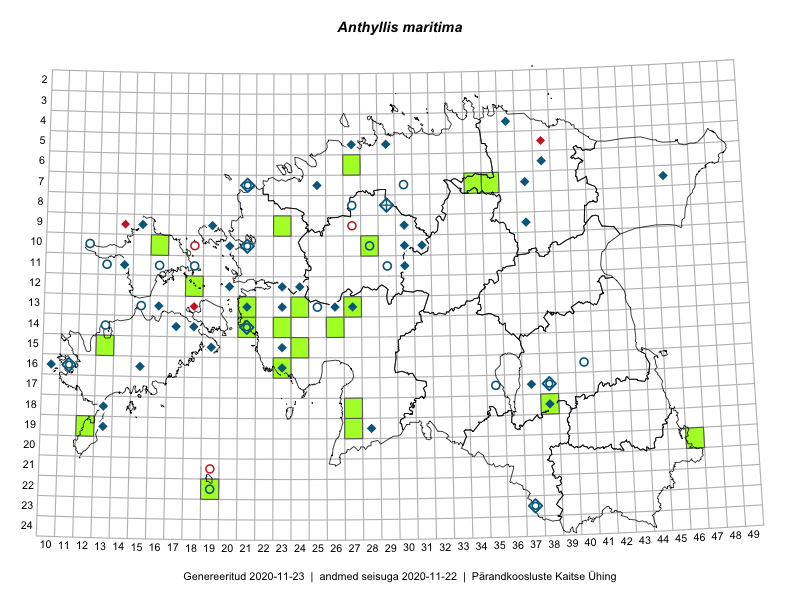

Anthyllis maritima — meri-koldrohi
Kaardile koondatud taksonid: Anthyllis maritima Schweigg. (28)

Kaart põhineb 28 kirjel, neist:
vaatlusi 0
eksemplare 28
Kaasaegsed1 leiukohad asuvad 20 ruudus.
Andmed “Eesti taimede levikuatlasest”,2 sulgudes ruutude arv:3
● 1971–2005 (31)
○ 1921–1970 (10)
△ kuni 1920 (0)
+ hävinud (0)
? kaheldav (0)
Lisaruudud teistest andmebaasidest:4
ELF: 2006– . . . (0)
PKÜ: 2006– . . . (0)
ELF: 1971–2005 (0)
PKÜ: 1997–2005 (0)
| Ruut | Vaatleja(d) | Vaatlusaeg | Kirje PlutoFis |
|---|---|---|---|
| 14-21 | Toomas Kukk | 2008-07-09 | TAA0078366: Anthyllis maritima Schweigg. |
| 13-21 | Peedu Saar | 2015-07-09 | TAA0116240: Anthyllis maritima Schweigg. |
| 07-34 | Jana-Maria Habicht | 2015-06-27 | TAM0117716: Anthyllis maritima Schweigg. |
| 13-24 | Peedu Saar, Timo Luhamäe, Johannes Kõdar | 2016-07-05 | TAA0133147: Anthyllis maritima Schweigg. |
| 18-27 | Peedu Saar, Ott Luuk | 2016-06-10 | TAA0133148: Anthyllis maritima Schweigg. |
| 14-23 | Thea Kull, Eerik Leibak | 2016-07-05 | TAA0133420: Anthyllis maritima Schweigg. |
| 06-27 | Toomas Kukk | 2015-07-13 | TAA0134345: Anthyllis maritima Schweigg. |
| 06-27 | Toomas Kukk | 2015-07-13 | TAA0134346: Anthyllis maritima Schweigg. |
| 22-19 | Silvia Pihu | 2015-07-03 | TAA0136319: Anthyllis maritima Schweigg. |
| 14-26 | Liina Oja, Maret Gerz | 2016-07-08 | TAA0136347: Anthyllis maritima Schweigg. |
| 14-21 | Toomas Kukk | 2012-06-25 | TAA0112490: Anthyllis maritima Schweigg. |
| 09-23 | Toomas Kukk | 2012-07-11 | TAA0112542: Anthyllis maritima Schweigg. |
| 06-27 | Toomas Kukk | 2016-06-06 | TAA0137224: Anthyllis maritima Schweigg. |
| 19-27 | Indrek Tammekänd | 2015-07-19 | TAA0136130: Anthyllis maritima Schweigg. |
| 19-27 | Indrek Tammekänd | 2016-07-02 | TAA0139826: Anthyllis maritima Schweigg. |
| 13-27 | Jaak-Albert Metsoja | 2015-06-10 | TAA0140461: Anthyllis maritima Schweigg. |
| 10-28 | Ott Luuk | 2015-06-25 | TAA0142507: Anthyllis maritima Schweigg. |
| 07-35 | Elle Rajandu, Karin Kikas | 2016-06-29 | TAA0141513: Anthyllis maritima Schweigg. |
| 16-23 | Eike Vunk, Indrek Tammekänd | 2017-07-20 | TAA0143661: Anthyllis maritima Schweigg. |
| 15-13 | Eike Vunk, Maarja Nõmm, Indrek Tammekänd, Rein Nellis | 2017-08-06 | TAA0143670: Anthyllis maritima Schweigg. |
| 12-18 | Toomas Kukk | 2017-06-15 | TAA0142231: Anthyllis maritima Schweigg. |
| 15-24 | Aat Sarv, Oliver Parrest | 2016-07-18 | TAA0145407: Anthyllis maritima Schweigg. |
| 14-21 | Peedu Saar | 2018-06-27 | TAA0146640: Anthyllis maritima Schweigg. |
| 14-21 | Peedu Saar | 2018-06-27 | TAA0146641: Anthyllis maritima Schweigg. |
| 14-21 | Peedu Saar, Ott Luuk, Toomas Kukk, Tiit Hallikma | 2019-06-18 | TAA0149362: Anthyllis maritima Schweigg. |
| 20-46 | Ott Luuk, Tiit Hallikma | 2019-07-10 | TAA0150261: Anthyllis maritima Schweigg. |
| 20-46 | Ott Luuk, Tiit Hallikma | 2019-07-10 | TAA0150262: Anthyllis maritima Schweigg. |
| 18-38 | Indrek Tammekänd | 2019-07-03 | TAA0150019: Anthyllis maritima Schweigg. |
Kaasaegsed leiukohad (tähistatud värvitud ruutudega) põhinevad peamiselt 2014–2019 välitööandmetel. Väiksemal määral on andmebaasi kantud vanemaid leiuandmeid aastatest 2006–2013.↩︎
Kukk, T., Kull, T., Eesti taimede levikuatlas. Eesti Maaülikool, Põllumajandus- ja Keskkonnainstituut, Tartu, 2005.↩︎
NB! 2005. aasta atlase andmestikus katavad uuemad leiud vanemaid. Näiteks kui liik on ruudus registreeritud 1971–2005, siis pole võimalik öelda, kas ta oli sellest ruudust teada ka enne 1970. aastat. Vana atlase andmetel hävinud ja kaheldavaid leiukohti pole hilisemate (taas)leidude põhjal korrigeeritud.↩︎
Eestimaa Looduse Fondi (ELF) ja Pärandkoosluste Kaitse Ühingu (PKÜ) andmebaasid sisaldavad inventeeritud koosluste kirjeldusi ja liigiloendeid. Neist andmekogudest on kaardile lisatud lisatud vaid need ruudud, millest uue atlase andmekogus taksoni kohta kirjeid veel pole. Kõrvale on jäetud teadaolevalt kaheldavad määrangud. Kaartidel katavad uuema perioodi andmed vanemaid, PKÜ omad ELFi omi. Kattumise tõttu võib kaardil näha olla vähem mingi kategooria ruute kui legendis olev arv näitab. ELFi ja PKÜ andmed ei kajastu hetkel vaatluste tabelis ega ruutude liigiloendites.↩︎